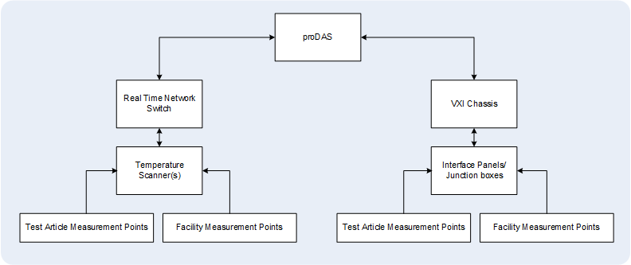

The Temperature Measurement System measures test article and test facility temperatures. Typically the system uses digital temperature scanners for measuring temperature from thermocouples and VXI analogue cards for measuring temperature from Resistance Temperature Detectors (RTD).
Temperature channels can be scanned by digital temperature scanners or scanned by signal conditioning plug-on modules mounted on a multi-channel high-speed scanning analogue to digital converter card installed in the VXI chassis.
The digitised output signals from digital temperature scanners or the VXI chassis are transmitted to proDAS and the temperature data is displayed on a Real-Time Display Computer.
The configuration for a typical Temperature Measurement System is displayed below.
